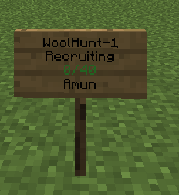
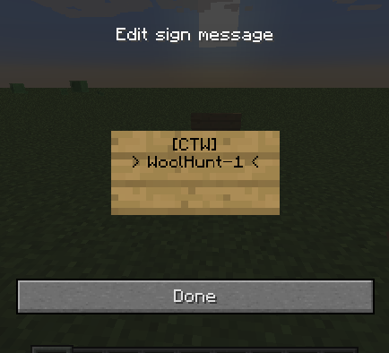

Home
Installation¶
Prerequisites¶
- Java 8 or newer
- Spigot server with Minecraft 1.8, 1.9, 1.10, 1.11, 1.12
- Vault
- ProtocolLib
- An economy plugin that hooks with Vault. You only need it when you want to enable economy (players receive currency for kills, etc)
If you have BungeeCord or Lilypad server it’s recommended to create a separate server to run Capture The Wool. If you can’t create a separate server for Capture The Wool it’s not recommended to run other games on this server as they may conflict with Capture The Wool.
Installing plugin¶
- Download the plugin from Spigot
- Copy plugin jar (CaptureTheWool.jar) to your server plugins directory
- Start server
- Look for any errors in console. If there are any your server probably doesn't meet all the prerequisites. If you can't figure out why you're having errors and can't fix them contact me by PM on Spigot and I will help you out. If you encounter error like
Failed to download world data for map classic, try downloading the default map at https://juzz0r.github.io/woolhunt-dl/classic/1.8.zip and unzip it to the Capture The Wool plugin directory. - Stop server
- Configure the config files (tutorial below) (This step is optional. If your server meets all prerequisites you are ready to use the plugin)
- Start the server and have fun!
Configuration files¶
With Capture The Wool come quite a few configuration files. They are located in plugin's main directory plugins/CaptureTheWool.
There are 4 files in total - config.json, kits.json, maps.json and en.properties. Files ending with .json use JSON syntax and en.properties uses Java .properties syntax.
JSON¶
.properties¶
Data types¶
In JSON configuration files there is a data type for every configuration value. That means that each item/key needs a specific value. For example currencyPerWin in economy config needs a value which is an integer, but enabled in the same config needs a boolean value (true or false). Here is a table of all data types currently in use in config files.
| Data type | Value | Example |
|---|---|---|
| boolean | true or false | true |
| string | a sequence of characters | "hey that's a string" |
| integer | an integer | 15 |
| number | an integer or floating point number | 7.25 |
| duration | duration in milliseconds | 15000 |
| material | minecraft material name string, click here for 1.13 materials, here for 1.8-1.12. | "diamond_pickaxe" |
| chat color | minecraft color string, click here for list | "&c" |
| itemstack | Minecraft item as JSON object containing material, amount, data, unbreakable and enchantments |
{"material": "wool","data": 14, "amount": 64} |
| itemstack.material | material of the itemstack | see above - material |
| itemstack.amount | integer size of itemstack (optional, default 1) | see above - integer |
| itemstack.data | integer data/durability of itemstack (optional, default 0) | see above - integer |
| itemstack.unbreakable | boolean value whether itemstack is unbreakable (optional, default false) | see above - boolean |
| itemstack.enchantments | an array of enchantments that the itemstack has | [{"type": "DAMAGE_ALL", "level": 4}] |
| enchantment | JSON object representing an enchantment, contains enchantment type and level | {"type": "DIG_SPEED", "level": 5} |
| enchantment.type | a string that shows the enchantment's type, click here for a list of available enchantments | SILK_TOUCH |
| enchantment.level | an integer that shows the enchantment's level, minimally 1 | 5 |
| location | JSON object containing x, y and z coordinates | {"x": 147, "y": 64.5, "z": -1024} |
| location.x, location.y, location.z, | number value of the coordinate | see above - number |
| cuboid | JSON object containing bounds of cuboid | {"loc1": {"x": 15, "y": 0, "z": -25.5}, "loc2": {"x": 768, "y": 25, "z": 400}} |
| cuboid.loc1, cuboid.loc2 | location of bound | see above - location |
List of enchantment types¶
Here is a table that shows enchantments available for this plugin. In the left column is the string that you need to enter to the configuration file and in the right column the common name for the enchantment (the one shown in Minecraft client).
| Enchantment | Common name |
|---|---|
| PROTECTION_ENVIRONMENTAL | Protection |
| PROTECTION_FIRE | Fire Protection |
| PROTECTION_FALL | Feather Falling |
| PROTECTION_EXPLOSIONS | Blast Protection |
| PROTECTION_PROJECTILE | Projectile Protection |
| OXYGEN | Respiration |
| WATER_WORKER | Aqua Affinity |
| THORNS | Thorns |
| DEPTH_STRIDER | Depth Strider |
| FROST_WALKER | Frost Walker |
| BINDING_CURSE | Curse of Binding |
| DAMAGE_ALL | Sharpness |
| DAMAGE_UNDEAD | Smite |
| DAMAGE_ARTHROPODS | Bane Of Arthropods |
| KNOCKBACK | Knockback |
| FIRE_ASPECT | Fire Aspect |
| LOOT_BONUS_MOBS | Looting |
| SWEEPING_EDGE | Sweeping Edge |
| DIG_SPEED | Efficiency |
| SILK_TOUCH | Silk Touch |
| DURABILITY | Unbreaking |
| LOOT_BONUS_BLOCKS | Fortune |
| ARROW_DAMAGE | Power |
| ARROW_KNOCKBACK | Punch |
| ARROW_FIRE | Flame |
| ARROW_INFINITE | Infinity |
| LUCK | Luck of the Sea |
| LURE | Lure |
| MENDING | Mending |
| VANISHING_CURSE | Curse of Vanishing |
General Config¶
General config is in config.json file and contains most of the settings of the Capture The Wool plugin. Here is a table which explains what each setting there does.
| key | value type | default | explanation |
|---|---|---|---|
| general.locale | string | en.properties | file where plugin looks for translations; has to be located in plugin directory plugins/CaptureTheWool |
| general.balanceTeams | boolean | true | if true players can't join teams that are bigger than their current team |
| general.showServerJoinMessages | boolean | false | if false players are not informed when someone joins the server |
| general.signs | boolean | false | whether signs are enabled (see below: Signs) |
| game.goldPerKill | integer | 20 | the amount of gold player receives when they get a kill |
| game.goldPerAssist | integer | 10 | the amount of gold player receives when they get a kill assist |
| game.goldPerCapture | integer | 100 | the amount of gold player receives when they capture a wool |
| game.currencyPerKill | integer | 10 | the amount of currency player receives when they get a kill |
| game.currencyPerAssist | integer | 3 | the amount of currency player receives when they get a kill assist |
| game.currencyPerCapture | integer | 250 | the amount of currency player receives when they capture a wool |
| economy.enabled | boolean | false | if true players receive currency for certain activities such as killing other players or capturing wool |
| economy.currencyPerWin | integer | 50 | the amount of currency player receives when they win a game |
| economy.currencyPerGame | integer | 15 | the amount of currency player receives when they finish a game |
| bungeeMode.enabled | boolean | false | if true plugin attempts to send player to bungeeMode.arena after joining and to bungeeMode.hub after player quits. |
| bungeeMode.arena | string | WoolHunt-1 | arena name where player is sent to after joining the server |
| bungeeMode.hub | string | hub | server name where player is sent to after quitting |
| data.storageType | string | file | how player data (stats, unlocked kits etc) are stored; file or mysql |
| data.mysql.host | string | localhost | mysql host |
| data.mysql.port | integer | 3306 | mysql port |
| data.mysql.username | string | root | mysql username |
| data.mysql.password | string | mysql password | |
| data.mysql.db | string | game | mysql database |
| data.file.directory | string | db | directory where player data is stored when storageType is file; it's relative to plugin directory, so for default it's plugins/CaptureTheWool/db |
| arena | arena config | See Arenas | |
| teams | array of teams | See more information about that in Teams | |
| arenas | array of arenas | See Arenas |
Arenas¶
Each arena is a Capture The Wool game to where players can connect. Every arena has its own players, world etc. Arenas are configured in main config file config.json. They are set in an array arenas.
Every JSON object in arenas contains a setting name. The data type of this setting is string.
name is the only setting you need to set for every arena. For example arena JSON object can look like {"name": "MyAwesomeArena"}
Settings
By default, settings for the arena are taken from default config that can be configured in the same file (config.json). Default arena config is an object named arena. It needs to contain all of the settings in the table below.
You can also set custom settings for each arena by adding a new object config to arena object. This object can contain settings of the following table. Custom settings override default settings.
For example, in an example below, arena CaptureTheWool-2 always has a startDelay 33333, no matter what it's in default config. However, this only applies to arena CaptureTheWool-2, all other arenas that don't have startDelay, have a default value.
{ "name": "CaptureTheWool-2", "config": { "startDelay": 33333 } }
Arena Settings
| key | value type | default | explanation |
|---|---|---|---|
| startDelay | duration | 45000 | duration after game starts when arena has atleast players specified in minPlayers |
| serverFullStartDelay | duration | 10000 | duration after game starts when arena is full |
| maxTime | duration | 300000 | max duration that game can last |
| minPlayers | integer | 20 | minimum amount of players with what game can begin |
| maxPlayers | integer | 40 | maximum amount of players |
| maxSpectators | integer | 24 | maximum amount of spectators |
| maps | array of strings | classic | names of maps that are in arena |
Storage¶
By default Capture The Wool stores players' data (stats and unlocked kits) in directory plugins/CaptureTheWool/db. You can change the storage type in the general config (see above - General config).
Warning
If you change the storage type, data from the previous type isn't migrated to a new one. It means that you lose all the data when you change the storage type.
Teams¶
Teams are configured in config.json file. They are set in an array teams that contains team JSON objects. Below is an explanation of the team JSON object.
| key | value type | explanation |
|---|---|---|
| name | string | name of the team |
| displayName | string | name that is displayed to players |
| color | chat color | color of the team |
Kits¶
Players can buy kits using in-game gold. Each kit gives them a set of items. Kits are configured in kits.json file. That files contains an array of kit JSON objects. Here is a specification of kit JSON item.
| key | value type | explanation | default |
|---|---|---|---|
| name | string | kit name | |
| default | boolean | if true this kit is equipped when player spawns | false |
| price | integer | price of this kit | 0 |
| modelTool | itemstack | item that the kit seller has in his hand | none |
| modelHelmet | itemstack | item that the kit seller has as a helmet | none |
| modelChestplate | itemstack | item that the kit seller has as a chestplate | none |
| modelLeggings | itemstack | item that the kit seller has as leggings | none |
| modelBoots | item that the kit seller has as a boots | itemstack | none |
| permission | string | permission players need to use the kit | none |
| items | array of itemstacks |
list of JSON item stacks objects more information that are supplied to player. You can also set droppable to false if you want that players cannot drop an item |
|
| skin | JSON object | skin that the kit seller is wearing, containing strings data and signature |
none |
Setting the kit seller skin¶
If you want to set a skin besides Steve or Alex for the entity that you can buy kits from, you can use a skin that any player currently has. First, go to https://mineskin.org and enter player's name to the field Minecraft Username. Scroll down and press Generate!. After that, a window opens where you can see two values: Texture Value and Texture Signature. In kit configuration set skin.data value to a value of Texture Value and skin.signature to a value of Texture Signature.
Note
If you change the skin of the player whose skin you used, the kit's skin doesn't change
Maps¶
Every Capture The Wool game takes place in a map. Maps are configured in maps.json file. That file contains an array of map JSON objects. Here is a specification for this object.
| key | value type | explanation |
|---|---|---|
| name | string | unique name for each map; this name is used to configure arena maps |
| displayName | string | name that is shown to players |
| border | cuboid | area where the game takes place; players can't go outside of it; |
| lobbyArea | cuboid | area of the map that is lobby; it's a place where players are before the game starts; players can't go outside of it; it's removed when the game starts |
| lobbySpawn | location | where players are teleported when they join an arena |
| noBuildAreas | array of cuboids | areas where players cannot place blocks |
| woolSources | array of wool source |
list of "wools" that can be captured` |
| wool source.team | string | owner of the wool; this team has to defend this wool from being captured by other team |
| wool source.name | string | name of the wool |
| wool source.color | chat color | color of the wool that is shown in chat |
| wool source.woolColor | string | color of the actual wool blocks that are spawned, see list of available values here |
| wool source.woolSpawn | location | a location where wool blocks spawn |
| wool source.limitedArea | cuboid | area where players that defend the wool cannot enter |
| wool source.captureBlock | location | location where player has to put the block after stealing it from woolSpawn |
| spawnLocations | - | contains list of spawnpoints for each team |
| kitLocations | - | contains list of possible kit seller locations for each team |
| shopkeeper | - | contains a shopkeeper location for each team |
Language¶
You can change almost all messages Capture The Wool sends to players. By default messages are in en.properties, however, this can be changed in the main config file (see general config).
Signs¶
You can create signs for arenas that can be used to join the arena.
Here is an example of a sign

As you can see,
- the first line shows the arena's name
- the second shows arena's state, for example Recruiting or In Game (Recruiting = Waiting for Players)
- the third shows player count in the arena; it's green when there is room in arena and arena is in lobby
- the fourth shows arena's map
Creating a sign¶
Creating such a sign is quite simple. All you need to do is set signs to true in general config and put down a sign with the following format:
- [CTW]
- Arena name (for example WoolHunt-1)
- (empty)
- (empty)
Here is an example:

Note
You need to have a permission to create a sign. See Permissions
Commands¶
| command | explanation | permission |
|---|---|---|
| /ctw join [arena] | Join an arena or open arena joining GUI | - |
| /ctw leave | Leave from arena | - |
| /ctw arena [player] | See the arena of specified player. If not set, shows sender's arena | - |
| /ctw start [arena] | Starts the game in the specified arena. If not set, starts the game in sender's arena | capturethewool.admin.start |
| /ctw stop [arena] [winner team] | Stops the game in a specified arena with the specified winner. If an arena is not set, sender's arena is used. If winner team is not set, the biggest team is used. | capturethewool.admin.stop |
| /ctw team [player] | Changes team for given player or sender's if not set. | capturethewool.admin.team |
Permissions¶
| permission | explanation |
|---|---|
| capturethewool.join-full-game | lets player join an arena even if it's full |
| capturethewool.admin.create-sign | lets player create signs |